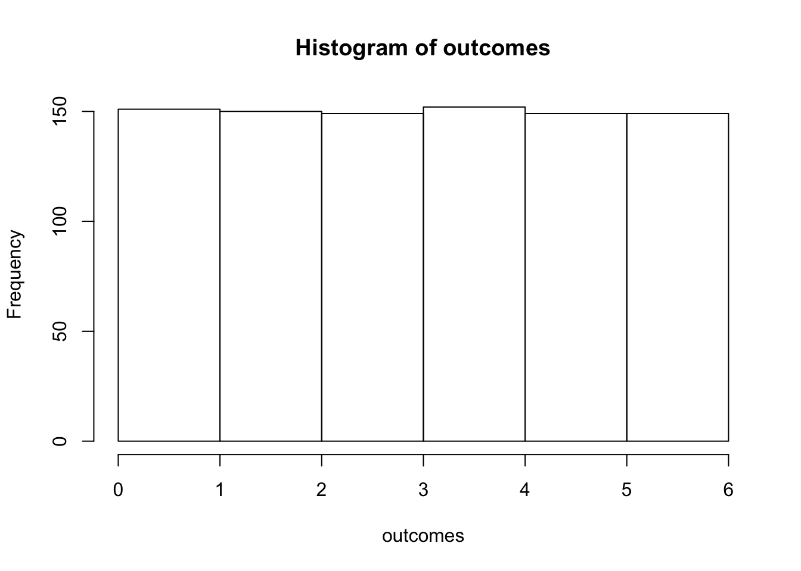
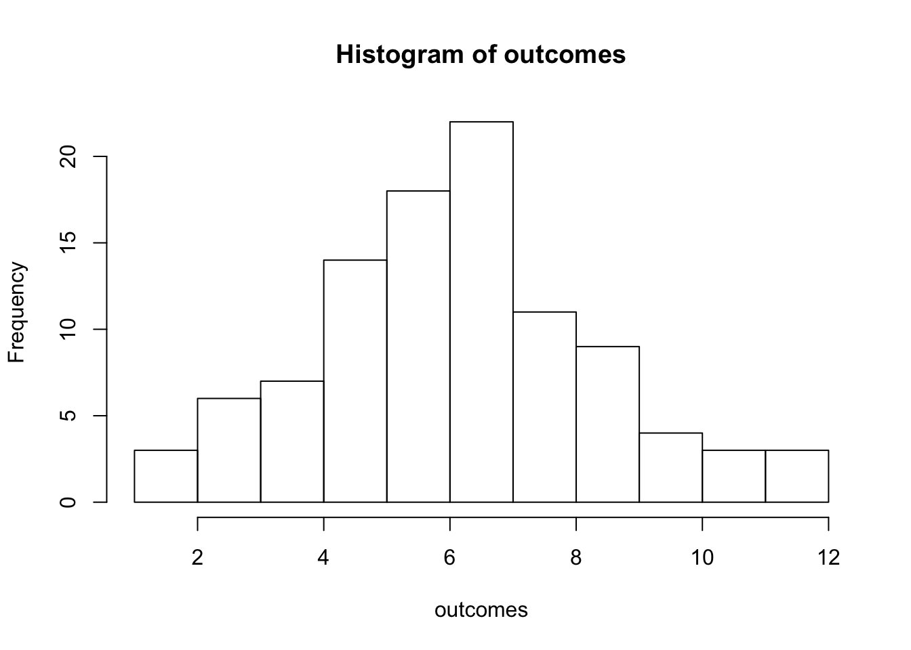
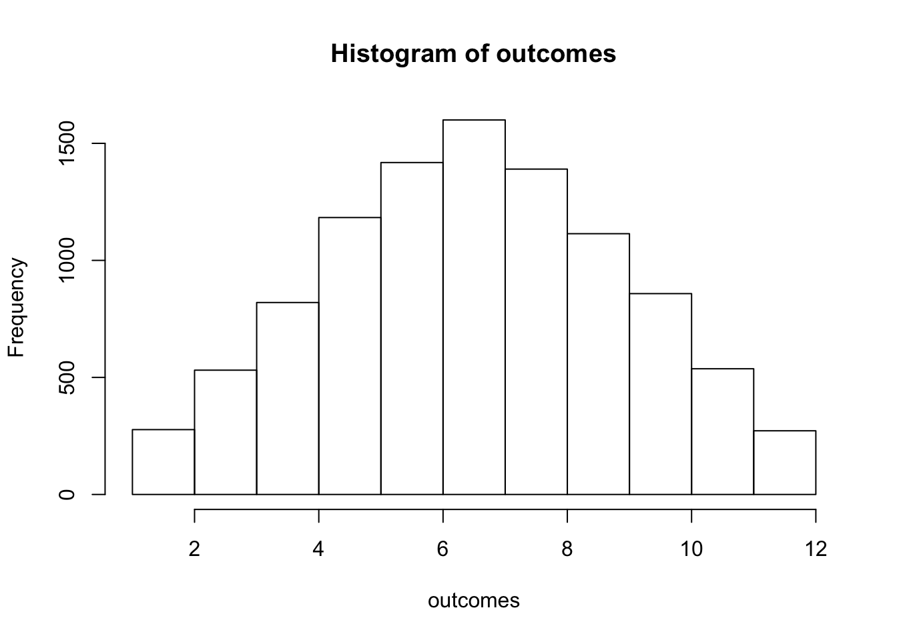

5 Distributions & Probabilities
Distributions are very important in statistics. The simplest distrubition is the uniform distribution. For example, let’s take an experiment where we roll one dice a number of time. If you roll it properly, the chance of getting any one side of the dice to face up is exactly 1/6th. Then let’s say you roll that dice 900 times. In a truly random universe, after 900 tosses, each side will have faced up exactly 150 times.
We can simulate this with the sample() function.
sides <- 1:6
tosses <- 900
outcomes <- sample(sides, tosses, replace = TRUE) # replace = TRUE is necessary to
# tell the function that we accept that the same outcome may occur multiple times
print(outcomes)## [1] 2 6 3 1 2 6 4 6 6 4 6 2 3 2 5 4 3 3 2 1 2 3 4 4 6 4 5 3 1 3 4 2 6 5 5 6 6 5 1 5 4 3 6 1 1 1
## [47] 6 3 1 1 6 4 6 3 5 6 3 6 4 3 3 3 6 4 3 6 6 5 4 4 3 1 6 2 5 3 5 4 5 4 4 5 1 2 1 2 4 5 2 2 4 1
## [93] 2 3 3 3 2 2 1 6 5 6 3 2 3 2 3 4 2 5 6 1 4 6 6 2 3 6 2 6 3 3 4 1 2 6 2 4 4 5 4 5 2 4 4 1 2 3
## [139] 6 5 1 4 1 2 2 5 6 2 1 2 1 4 2 3 6 2 1 2 1 5 1 5 6 3 4 2 6 2 2 4 4 2 5 2 6 6 1 5 4 3 5 6 4 6
## [185] 5 4 6 1 5 4 3 3 3 4 4 2 6 2 4 5 1 5 4 2 5 4 4 3 6 4 4 4 2 1 4 2 6 3 3 5 3 6 2 6 2 6 3 3 4 2
## [231] 4 4 1 3 1 3 2 4 1 6 3 3 1 2 1 2 5 2 6 4 4 1 1 5 3 1 3 4 5 5 5 5 2 5 6 6 5 5 2 3 5 5 2 1 1 3
## [277] 4 4 3 5 4 3 2 1 2 4 1 3 5 3 1 1 5 2 6 4 1 2 5 2 5 3 1 4 1 2 6 5 6 3 5 3 2 2 5 6 1 5 5 3 2 1
## [323] 2 5 1 3 2 5 6 5 5 5 4 1 4 4 1 6 1 4 6 5 2 5 2 5 5 5 1 1 4 3 2 2 3 1 1 3 3 4 2 2 5 6 6 2 4 2
## [369] 6 5 2 4 6 4 2 1 3 2 5 3 5 6 4 5 1 4 4 5 3 5 4 3 6 2 4 2 2 4 3 1 2 1 1 2 3 6 2 3 4 3 1 5 5 1
## [415] 1 4 3 1 1 5 2 3 1 4 1 6 5 6 5 6 1 5 2 4 3 5 2 5 2 5 5 6 2 2 2 2 2 3 1 2 5 4 2 6 1 6 4 4 1 5
## [461] 5 6 6 5 2 5 3 1 4 1 4 5 6 1 1 1 3 1 4 4 1 2 5 6 1 4 3 4 1 5 2 2 6 3 1 4 4 4 3 5 5 4 5 4 6 5
## [507] 3 2 1 6 6 4 5 1 4 1 6 2 5 6 6 4 3 1 5 6 4 6 6 1 1 4 2 1 2 6 4 5 6 5 2 1 6 6 4 3 2 2 3 6 5 4
## [553] 1 3 3 1 1 4 6 6 3 4 6 2 2 6 5 5 1 3 1 3 2 4 5 3 5 6 3 6 3 3 3 2 1 6 6 1 2 4 5 2 6 6 2 2 1 2
## [599] 3 5 3 2 5 3 6 5 6 6 5 6 3 6 2 6 4 4 1 6 6 5 1 6 3 2 1 1 3 2 2 4 6 6 1 1 5 6 4 1 5 2 4 5 6 3
## [645] 4 5 6 6 1 3 3 3 1 2 4 6 4 3 2 6 6 2 6 2 4 1 2 1 6 2 3 2 6 6 6 2 2 4 3 6 4 3 3 1 5 6 3 3 6 1
## [691] 4 4 5 4 3 6 3 1 2 5 6 1 5 4 4 1 4 2 1 4 3 3 1 5 1 6 2 6 4 3 3 1 1 1 3 5 2 5 6 3 3 6 1 1 5 3
## [737] 2 5 5 2 4 4 5 4 3 5 4 5 6 1 5 5 6 1 3 2 2 1 5 4 3 6 4 5 2 2 6 3 1 2 1 4 1 1 6 2 4 3 4 1 4 3
## [783] 1 1 6 2 3 1 3 6 2 1 6 1 5 2 5 4 4 4 6 3 5 3 5 4 1 1 3 2 5 2 3 5 6 4 4 4 5 6 1 5 6 6 3 3 5 1
## [829] 4 5 6 2 5 5 4 4 4 1 6 3 5 6 1 3 6 2 3 3 5 4 1 2 2 6 2 3 3 1 4 5 3 5 5 1 4 4 3 1 5 2 1 3 3 3
## [875] 5 4 1 4 6 5 1 5 3 4 1 3 1 2 1 6 3 3 4 3 5 6 2 1 3 4This list of values is not particularly informative, perhaps we should make a histogram with the frequency at which each side came up. We can do this with both the hist() function or ggplot’s geom_histogram() function. Because ggplot() is somewhat more complex for this example, I’ll leave it for later.

As is always the case with random, even after 900 tosses, it’s still not perfect, but it approaches this. This approach is a nice segue to another distribution, the probability distribution. Let’s say we’re still not bored and want to experiment some more. Let’s say you take a second dice and throw both dice, you sum the result, and you repeat this another 99 times. The code for this is somewhat more complicated. It’s simple for the first toss though, we use same function as before.
dice <- 2
outcome <- sample(sides, dice, replace = TRUE) # replace = TRUE is necessary to
# tell the function that we accept that the same outcome may occur multiple times
print(outcome)## [1] 2 6Then we sum the outcome with the sum() function.
## [1] 8So what are the chances that any sum of the two dices comes up? There’s in total 11 possible outcomes. The lowest possible sum is 2, if both dice turn up with 1. The highest possible outcome is 12, when both dice show 6. There’s only one possible cominbation to reach either of these outcomes. The outcome of 4, can be obtained in more than one way. Dice 1 shows 1, dice 2 shows 3, or vice versa, or both dice show 2. Remember that there’s in total 36 possible outcomes (6 possibilties for either dice in any possible cominbation, 6x6). So the possibility of obtaining a sum of 12 is 1/36, since there’s only one possible combination this can be achieved. For the outcome of 4, it’s 3/36, as a combination of [1,3], [2,2], or [3,1]. Using the same logic, there’s 6 different ways of getting the result of 7. This also makes 7 the most likely sum to come up, since there’s the largest number of combination to achieve this result.
So let’s say we want to throw a pair of dice 100 times, to simulate this in R, we put it into a replicate() function. And instead of the individual steps we used before, we now group the functions together in one line, which effectively just means wrapping the sample() function in a sum() function. We want to replicate this 100 times.
n_replications <- 100
outcomes <- replicate(n = n_replications, expr = sum(sample(sides, dice, replace = TRUE)))
print(outcomes)## [1] 7 5 12 7 6 5 7 7 4 4 6 9 11 6 6 7 6 9 8 7 7 7 7 8 6 11 10 7 3 7 8
## [32] 10 7 7 5 6 12 5 6 4 6 6 8 4 4 9 5 5 3 8 8 9 6 8 9 3 5 3 11 8 2 8
## [63] 7 7 5 5 3 6 4 7 5 7 7 6 7 7 12 5 10 9 2 9 9 3 5 10 9 6 6 8 5 6 2
## [94] 8 5 7 6 6 7 4Again, we can plot these values on histogram.

The distribution that this results in is the probability distribution, as you can see, the distribution is not yet identical to what we predicted theoretically. The probability distribution denotes the probabiltiy of different outcomes of an experiment. Since there’s more different ways of obtaining a sum of 6, 7, or 8 than there’s is to get a sum of 3, or 12 If you sample enough experiments, the probability distribution will tend to resemble the distribution that we expected from the theory, also known as the normal distribution (or Gaussian distribution). A normal distribution is a continuous probabilty distrbution. A set of 100 experiments is a good start, but when you run 1000 or 10.000 experiments, the distribution resembles more and more a perfect normal distribution.
n_replications <- 10000
outcomes <- replicate(n = n_replications, expr = sum(sample(sides, dice, replace = TRUE)))
hist(outcomes, breaks = 1:12)
In the figure below, I’ve included an animation of how ten different random experiments plot on top of the theoretical probability distribution:
##
Frame 1 (1%)
Frame 2 (2%)
Frame 3 (3%)
Frame 4 (4%)
Frame 5 (5%)
Frame 6 (6%)
Frame 7 (7%)
Frame 8 (8%)
Frame 9 (9%)
Frame 10 (10%)
Frame 11 (11%)
Frame 12 (12%)
Frame 13 (13%)
Frame 14 (14%)
Frame 15 (15%)
Frame 16 (16%)
Frame 17 (17%)
Frame 18 (18%)
Frame 19 (19%)
Frame 20 (20%)
Frame 21 (21%)
Frame 22 (22%)
Frame 23 (23%)
Frame 24 (24%)
Frame 25 (25%)
Frame 26 (26%)
Frame 27 (27%)
Frame 28 (28%)
Frame 29 (29%)
Frame 30 (30%)
Frame 31 (31%)
Frame 32 (32%)
Frame 33 (33%)
Frame 34 (34%)
Frame 35 (35%)
Frame 36 (36%)
Frame 37 (37%)
Frame 38 (38%)
Frame 39 (39%)
Frame 40 (40%)
Frame 41 (41%)
Frame 42 (42%)
Frame 43 (43%)
Frame 44 (44%)
Frame 45 (45%)
Frame 46 (46%)
Frame 47 (47%)
Frame 48 (48%)
Frame 49 (49%)
Frame 50 (50%)
Frame 51 (51%)
Frame 52 (52%)
Frame 53 (53%)
Frame 54 (54%)
Frame 55 (55%)
Frame 56 (56%)
Frame 57 (57%)
Frame 58 (58%)
Frame 59 (59%)
Frame 60 (60%)
Frame 61 (61%)
Frame 62 (62%)
Frame 63 (63%)
Frame 64 (64%)
Frame 65 (65%)
Frame 66 (66%)
Frame 67 (67%)
Frame 68 (68%)
Frame 69 (69%)
Frame 70 (70%)
Frame 71 (71%)
Frame 72 (72%)
Frame 73 (73%)
Frame 74 (74%)
Frame 75 (75%)
Frame 76 (76%)
Frame 77 (77%)
Frame 78 (78%)
Frame 79 (79%)
Frame 80 (80%)
Frame 81 (81%)
Frame 82 (82%)
Frame 83 (83%)
Frame 84 (84%)
Frame 85 (85%)
Frame 86 (86%)
Frame 87 (87%)
Frame 88 (88%)
Frame 89 (89%)
Frame 90 (90%)
Frame 91 (91%)
Frame 92 (92%)
Frame 93 (93%)
Frame 94 (94%)
Frame 95 (95%)
Frame 96 (96%)
Frame 97 (97%)
Frame 98 (98%)
Frame 99 (99%)
Frame 100 (100%)
## Finalizing encoding... done!Some statistical tests that we cover later require that the data is normally distributed in order to output a reliable statistic. We can test whether or not the set of data we have is normally distributed by using a Shapiro-Wilk’s normality test. This test compares the distribution of our data with a perfectly normally distributed set of data with the same mean as our data. The R function to perform a Shapiro-Wilk’s test is shapiro.test(). The output of this function is a p-value indicating whether our data is significantly different from a normal distribution. So if our data is roughly normally distributed, the p-value is larger than 0.05, if our data is not normally distributed, it is significantly different from a normal distribution and the p-value will be below 0.05. Let’s try it on the scores from the history exam we used earlier!
##
## Shapiro-Wilk normality test
##
## data: data$scores
## W = 0.84665, p-value = 0.1841##
## Shapiro-Wilk normality test
##
## data: data_highschool$scores
## W = 0.96086, p-value = 0.814The p-value is higher than 0.05 for both datasets, so that means that we can assume the data is normally distributed.